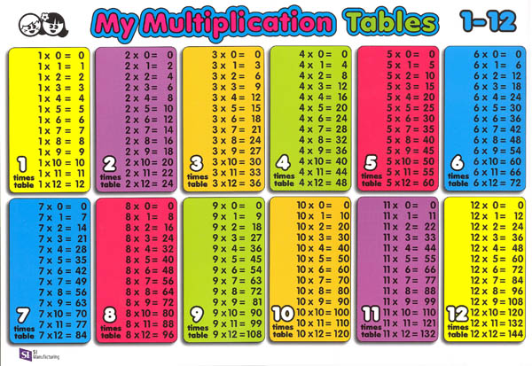
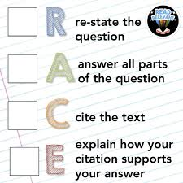
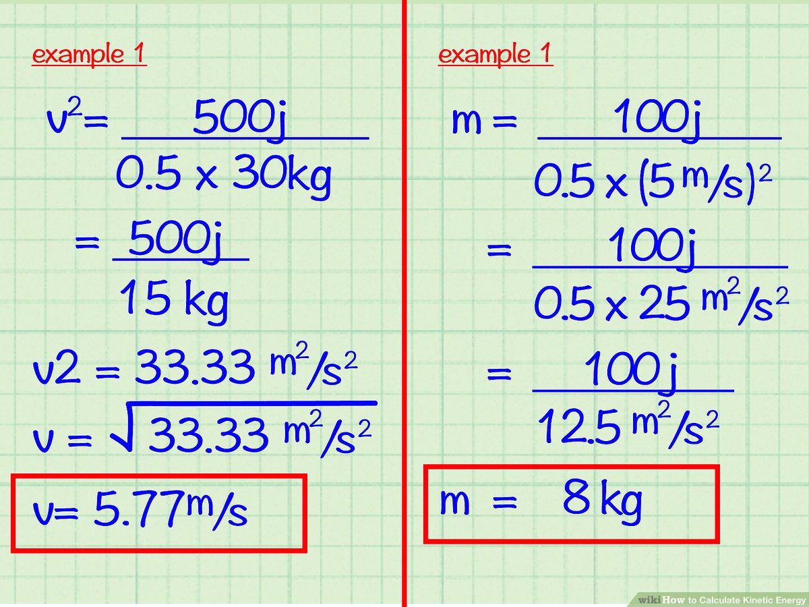

Help Students with subjects they have trouble with!
students are going to be able to work on the subjects they have trouble with. At the end of each lesson there will be a little test to see if you were listening. Then the teachers and principal will be able to connect to see if the students understood the lesson they were tought. If the students got a low grade every time they took the test they will go down a grade if they get a higher score every single time they move up to a bigger and harder test. The students could also have a username and password to enter the website.The teachers can also assign them to lessons that they need. The lessons will go on forever until the students get it. They will be able to do any subject they have trouble with. At the bottom of the lobby there will be 3 icons one is my stuff the next is called my progress and to do. To do is the lessons or the lessons the teacher is giving you on the top of the lobby there will be a game icon if you press it will have six games but to play them you have to get points by completing lessons. In two or three months you will have a big test to see if you improved on the subject your having trouble with.
This is a educatoinal video for kids   